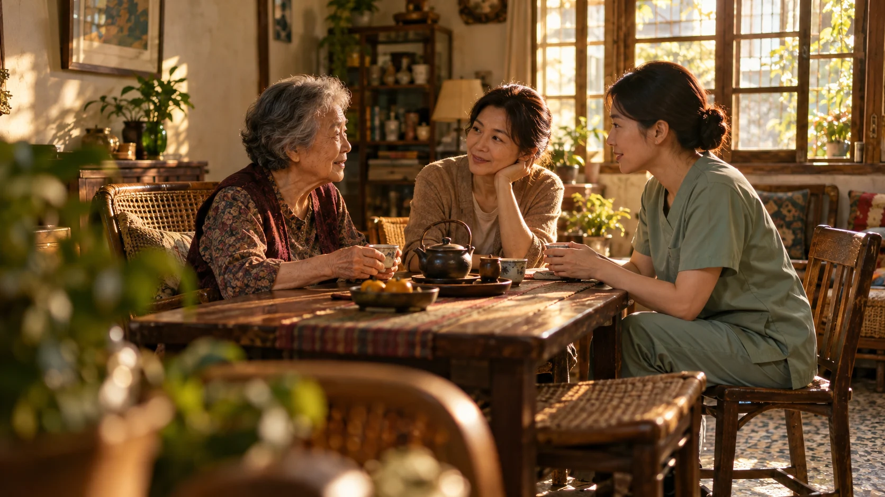

選工具，少走彎路。
選用與導入檢核表：從需求、費用、資料到後續支援，先問清楚，再決定怎麼試。
01 本一科技｜以人為本，從居護現場開始
把人的需要，放在功能之前。你熟悉照護，我們學著把工具做合用。
先理解人，再談功能。
本一走進居護現場，先聽一天的工作怎麼展開：訪視前要準備什麼、回來後還有哪些紀錄與交接。也把都會與非都會的路程、機構資源和工作習慣放進考量。使用不順手的地方、反而多做的一步，都值得我們帶回去檢視。
把你的現場經驗，帶進這場對話
WITH THE PEOPLE WHO CARE
本一把時間花在反覆理解、整理回饋與調整做法。還沒做好的部分，也一起攤開來看。
從訪視前準備、現場照護，到回來後的紀錄、覆核與交付，沿著工作一步步問，找出真正卡住的地方。
機構附屬與獨立型、都會與非都會，資源和習慣各不相同。我們持續確認工具在哪裡合用，在哪裡還需要調整。
把訪談與試用中的問題整理回開發，檢視功能、流程與支援方式。也把還沒改善、仍需合作的部分說清楚，讓下一次修改有依據。
三份實用工具，把現場的討論帶回去。
選用與導入檢核表：從需求、費用、資料到後續支援，先問清楚，再決定怎麼試。
完整工作流程盤點表：從資料準備、覆核到存檔交付，一起找出真正需要改善的工作。
需求與改善追蹤表：記下現場問題、負責人與試用結果，讓每一項回饋都有下一步。
03 FROM LISTENING TO LEARNING
臺南・臺中，兩場次適用先聽見真實需求，再看產品如何調整、試用結果與應用限制。把第一線的學習，帶回自己的機構。
主辦單位保留議程調整之權利。
活動主持人
衛生福利部護理及健康照護司長官
本一科技股份有限公司
「呼叫家護師」計畫主持人
機構附屬居家護理所回饋團隊
都會獨立型居家護理所代表
社團法人台灣居家護理暨服務聯盟總會
名譽理事長或理事長
本一科技股份有限公司
「呼叫家護師」計畫執行人員
非都會獨立型居家護理所回饋團隊
本一科技股份有限公司
「呼叫家護師」計畫技術人員
本一科技股份有限公司
《呼叫家護師》手冊編製人員
衛生福利部護理及健康照護司長官
社團法人台灣居家護理暨服務聯盟總會 與談人
居家護理所回饋團隊
本一科技股份有限公司
「呼叫家護師」計畫主持人
04 YOUR NEXT CHAPTER
每一份參與，都是改變的開始。邀請護理、照服、醫療專業夥伴，
以及關心社區與家庭健康的您，
帶著現場問題，一起交流做法。
05 GOOD TO KNOW
帶著好奇心來，
也帶回照護的更多可能。
歡迎護理人員、照服員、其他醫療人員，以及關心居家照護、社區與家庭健康的夥伴報名。未滿 18 歲者，請先聯繫活動窗口協助。
活動全程免費，午餐請自理，活動結束提供點心盒。臺南場館僅可飲水、禁止飲食；臺中場館全區禁止外食，請配合場館規定。
護理與長照學分申請中。相關事宜請洽活動窗口。
請聯繫活動窗口莊雯雅，並提供您的報名編號協助查詢。電話：02-7724-8007 分機 09；電子郵件：secretary@theoneai.com.tw。